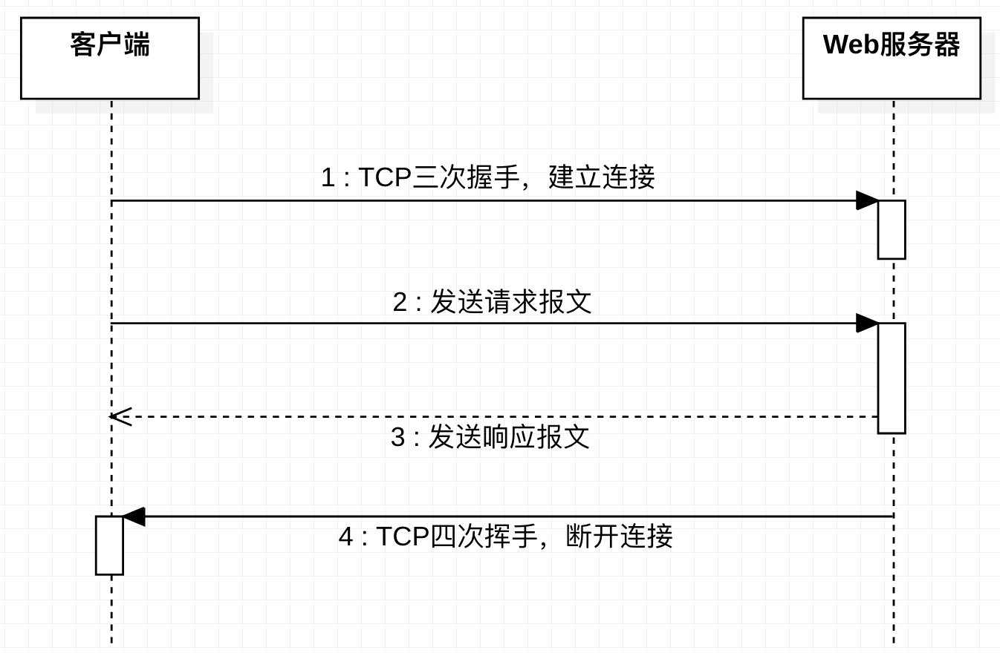
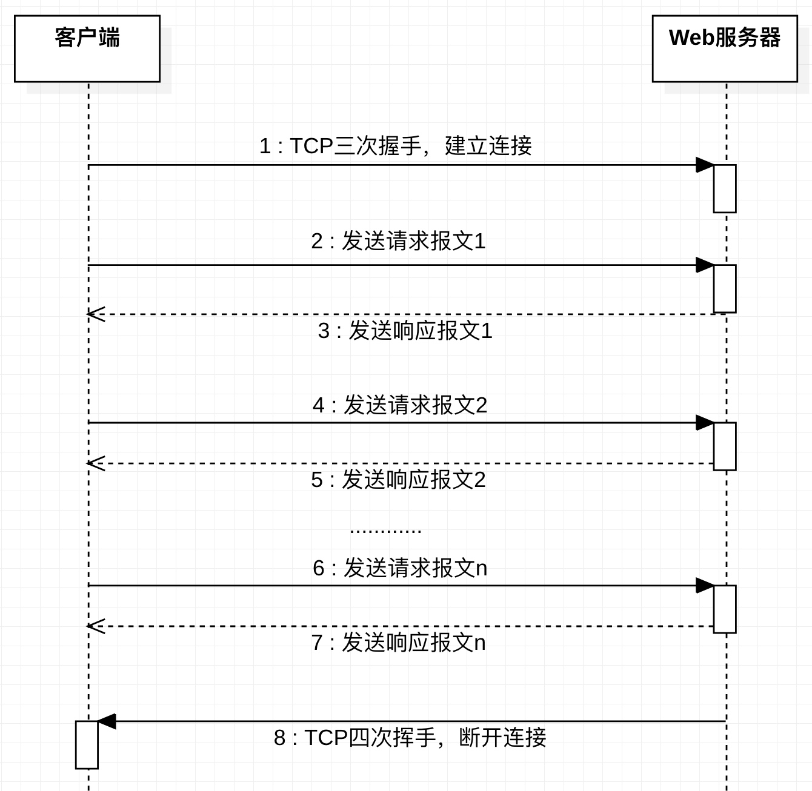

HTTP的长短连接
对HTTP有点了解的都知道从1.1开始，HTTP默认使用长连接的方式与Web服务器交互。但这个长连接指的是什么？长连接是一直持续下次吗？
HTTP协议的Request/Response模型
HTTP是一个应用层协议，基于运输层的TCP协议。HTTP协议是一种无状态协议，即客户端和Web服务器不需要建立持续的连接。客户端和Web服务器的连接时基于请求/应答模式：1、客户端和Web服务器建立一个连接；2、客户端发送一个请求报文；3、Web服务器收到请求报文后并返回一个响应报文；4、客户端和Web服务器断开连接。

HTTP的非持续、持续连接
在HTTP 1.1之前，采用的是非持续连接（见图1），它有两大缺点：
- 必须为每一个请求的对象建立和维护一个全新的连接。对于每个这样的连接，在客户和服务器中都要分配TCP的缓存区和保存TCP变量，这给Web服务器带来严重的负担（成千上万个请求）；
- 每一个对象要经受两倍的RTT（往返时延）的交付时延。
从HTTP 1.1开始，默认使用持续连接，设置请求报文中的首部行 Connection: keep-alive，它的优点在于：
- 客户端与Web服务器建立连接后，在相同的客户端与Web服务器之间，后续的请求和响应报文能够通过相同的连接进行传送；
- 如果一条连接经过一定时间间隔（可配置）仍未被使用，HTTP服务器就会关闭该连接。

从图1、2可以看出，HTTP的长短连接的本质是对TCP连接状态的描述，HTTP并没有长短连接！